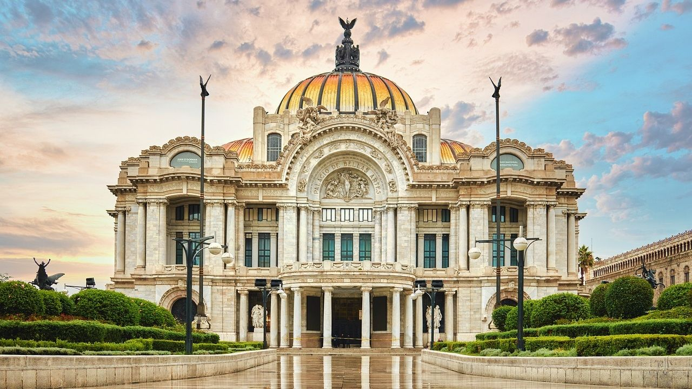
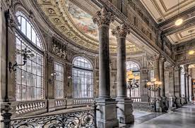

El centro histórico de la Ciudad de México se caracteriza por su riqueza y su gran legado cultural, uno de estos legados es la vasta arquitectura que se puede observar en cada una de sus calles, muchos edificios se han convertido hoy en día en museos con el objetivo de preservar y difundir el arte en México
La pintura es un arte que ha estado siempre presente en la historia de México. Desde la época prehispánica hasta la actualidad, ha sido un medio de expresión que pone de manifiesto la creatividad del mexicano. A lo largo del tiempo, se han creado obras que han retratado el pasado, presente y futuro del país.
La arquitectura mexicana es un fenómeno cultural que nace de la ideología de gobiernos nacionalistas del siglo XX la cual fue dando forma a la imagen de identidad por su colorido y abigarramiento de elementos ornamentales heredados de culturas ancestrales.
En los últimos años, México se ha convertido en un destino popular para los fotógrafos de todo el mundo. Los diversos paisajes del país, su rica cultura y su luz única han inspirado a muchos fotógrafos a capturar su belleza en película. Hoy en día, hay muchos estilos fotográficos diferentes que son populares en México.
Con sus exposiciones, los museos sensibilizan al público sobre el desarrollo de las sociedades, los intercambios culturales, el entendimiento mutuo, la cooperación y la paz entre los pueblos.
Es un recinto cultural ubicado en el Centro Histórico de la Ciudad de México, considerado uno de los más importantes en la manifestación de las artes en México. Este ha sido escenario y testigo de impactantes acontecimientos tanto artísticos, como sociales y políticos; su construcción fue iniciada hacia el final del mandato de Porfirio Díaz con motivo de la celebración del centenario del inicio de la Independencia de México
Se localiza en el antiguo Palacio de los Condes de Santiago de Calimaya. Es uno de los ejemplos más notables de la arquitectura barroca del siglo XVIII, obra del arquitecto Francisco Guerrero y Torres. El Museo de la Ciudad de México, abrió sus puertas el 31 de octubre de 1964 y hoy ofrece servicios como: exhibiciones temporales que muestran la obra de artistas plásticos que expresan, a través de sus colores y técnicas, las múltiples formas de mirar y sentir la Ciudad de México; el Museo de sitio y estudio Clausell

El Museo Nacional de Arte de México se encuentra en el Centro Histórico de la Ciudad de México, en un edificio marcado con el número 8 de la calle Tacuba, en la plaza Manuel Tolsá. Alberga una colección representativa de arte mexicano, desde la era virreinal hasta la primera mitad del siglo XX
